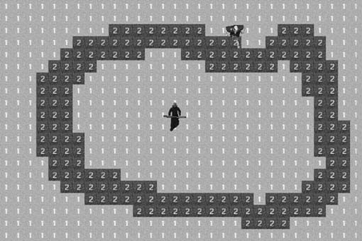
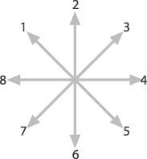
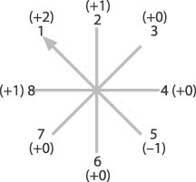
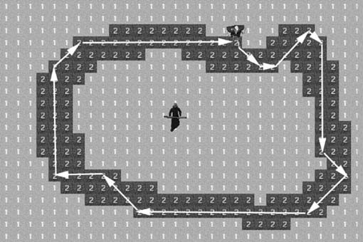

|
|
< Day Day Up > |
|
6.3 Path FollowingPathfinding is often thought of solely as a problem of moving from a starting point to a desired destination. Many times, however, it is necessary to move computer-controlled characters in a game environment in a realistic way even though they might not have an ultimate destination. For example, a car-racing game would require the computer-controlled cars to navigate a roadway. Likewise, a strategy or role-playing game might require troops to patrol the roads between towns. Like all pathfinding problems, the solution depends on the type of game environment. In a car-racing game the environment probably would be of a continuous nature. In this case the movement probably would be less rigid. You would want the cars to stay on the road, but in some circumstances that might not be possible. If a car tries to make a turn at an extremely high rate of speed, it likely would run off the road. It could then attempt to slow down and steer back in the direction of the road. You can use a more rigid approach in a tile-based game environment. You can think of this as more of a containment problem. In this scenario the game character is confined to a certain terrain element, such as a road. Figure 6-11 shows an example of this. Figure 6-11. Following the roadIn Figure 6-11, all the terrain elements labeled as 2s are considered to be the road. The terrain elements labeled as 1s are considered to be out of bounds. So, this becomes a matter of containing the computer-controlled troll to the road area of the terrain. However, we don't want the troll to simply move randomly on the road. The result would look unnatural. We want the troll to appear as though it's walking along the road. As you'll notice, the road is more than one tile thick, so this isn't just a matter of looking for the next adjacent tile containing a 2 and then moving there. We need to analyze the surrounding terrain and decide on the best move. A tile-based environment typically offers eight possible directions when moving. We examine all eight directions and then eliminate those that are not part of the road. The problem then becomes one of deciding which of the remaining directions to take. Example 6-8 shows how we begin to analyze the surrounding terrain. Example 6-8. Terrain analysis
int r;
int c;
int terrainAnalysis[9];
r=entityList[i].row;
c=entityList[i].col;
terrainAnalysis[1]=terrain[r-1][c-1];
terrainAnalysis[2]=terrain[r-1][c];
terrainAnalysis[3]=terrain[r-1][c+1];
terrainAnalysis[4]=terrain[r][c+1];
terrainAnalysis[5]=terrain[r+1][c+1];
terrainAnalysis[6]=terrain[r+1][c];
terrainAnalysis[7]=terrain[r+1][c-1];
terrainAnalysis[8]=terrain[r][c-1];
for (j=1;j<=8;j++)
if (terrainAnalysis[j]==1)
terrainAnalysis[j]=0;
else
terrainAnalysis[j]=10;
We begin defining the terrainAnalysis array. This is where we will store the terrain values from the eight tiles adjacent to the computer-controlled troll. We do this by offsetting the current row and column positions of the troll. After the eight values are stored, we enter a for loop which determines if each value is part of the road. If it's not part of the road, the corresponding terrainAnalysis array element is set to 0. If it is part of the road, the terrainAnalysis element is set to a value of 10. Now that we know which directions are possible, we want to take the current direction of movement into consideration. We want to keep the troll moving in the same general direction. We want to turn only when we have to, and even then a turn to the left or right is preferable to a complete change in direction. In this demo, we assign a number to each direction so that we can track the current direction. Figure 6-12 shows the numbers assigned to each direction. Figure 6-12. Possible directionsWe will use the numbers shown in Figure 6-12 to record the direction of the move each time we update the troll's position. This enables us to give added weight to the previous direction whenever it is time to update the troll's position. Example 6-9 shows how this is accomplished. Example 6-9. Direction analysis
if (entityList[i].direction==1)
{
terrainAnalysis[1]=terrainAnalysis[1]+2;
terrainAnalysis[2]++;
terrainAnalysis[5]--;
terrainAnalysis[8]++;
}
if (entityList[i].direction==2)
{
terrainAnalysis[1]++;
terrainAnalysis[2]=terrainAnalysis[2]+2;
terrainAnalysis[3]++;
terrainAnalysis[6]--;
}
if (entityList[i].direction==3)
{
terrainAnalysis[2]++;
terrainAnalysis[3]=terrainAnalysis[3]+2;
terrainAnalysis[4]++;
terrainAnalysis[7]--;
}
if (entityList[i].direction==4)
{
terrainAnalysis[3]++;
terrainAnalysis[4]=terrainAnalysis[4]+2;
terrainAnalysis[5]++;
terrainAnalysis[7]--;
}
if (entityList[i].direction==5)
{
terrainAnalysis[4]++;
terrainAnalysis[5]=terrainAnalysis[5]+1;
terrainAnalysis[6]++;
terrainAnalysis[8]--;
}
if (entityList[i].direction==6)
{
terrainAnalysis[2]--;
terrainAnalysis[5]++;
terrainAnalysis[6]=terrainAnalysis[6]+2;
terrainAnalysis[7]++;
}
if (entityList[i].direction==7)
{
terrainAnalysis[3]--;
terrainAnalysis[6]++;
terrainAnalysis[7]=terrainAnalysis[7]+2;
terrainAnalysis[8]++;
}
if (entityList[i].direction==8)
{
terrainAnalysis[1]++;
terrainAnalysis[4]--;
terrainAnalysis[7]++;
terrainAnalysis[8]=terrainAnalysis[8]+2;
}
decrease the weight of that element of the terrainAnalysis array by a value of 1. This example is illustrated in Figure 6-13. Figure 6-13. Weighting directionsAs Figure 6-13 shows, the current direction is 1, or up and left. All things being equal, we want the troll to continue in that direction, so the terrainAnalysis element is weighted with a +2. The two next best possibilities are directions 2 and 8 because those are the least severe turns. Those two are weighted with a +1. All the remaining elements are left as is, except for 5, which is the complete opposite direction. The next step is to choose the best direction. This is demonstrated in Example 6-10. Example 6-10. Choosing a direction
maxTerrain=0;
maxIndex=0;
for (j=1;j<=8;j++)
if (terrainAnalysis[j]>maxTerrain)
{
maxTerrain=terrainAnalysis[j];
maxIndex=j;
}
As Example 6-10 shows, we traverse the terrainAnalysis array in search of the most highly weighted of the possible directions. Upon exit from the for loop, the variable maxIndex will contain the array index to the most highly weighted direction. Example 6-11 shows how we use the value in maxIndex to update the troll's position. Example 6-11. Update position
if (maxIndex==1)
{
entityList[i].direction=1;
entityList[i].row--;
entityList[i].col--;
}
if (maxIndex==2)
{
entityList[i].direction=2;
entityList[i].row--;
}
if (maxIndex==3)
{
entityList[i].direction=3;
entityList[i].row--;
entityList[i].col++;
}
if (maxIndex==4)
{
entityList[i].direction=4;
entityList[i].col++;
}
if (maxIndex==5)
{
entityList[i].direction=5;
entityList[i].row++;
entityList[i].col++;
}
if (maxIndex==6)
{
entityList[i].direction=6;
entityList[i].row++;
}
if (maxIndex==7)
{
entityList[i].direction=7;
entityList[i].row++;
entityList[i].col--;
}
if (maxIndex==8)
{
entityList[i].direction=8;
entityList[i].col--;
}
The value in maxIndex indicates the new direction of the troll. We include an if statement for each of the possible eight directions. Once the desired direction is found, we update the value in entityList[i].direction. This becomes the previous direction for the next time the troll's position needs to be updated. We then update the entityList[i].row and entityList[i].col values as needed. Figure 6-14 shows the path followed as the troll moves along the road. Figure 6-14. Road pathAs Figure 6-14 shows, the troll continuously circles the road. In a real game, you could make the computer-controlled adversaries continuously patrol the roadways, until they encounter a player. At that point the computer-controlled character's state could switch to an attack mode. In this example, we used the adjacent tiles to make a weighted decision about direction to move in next. You can increase the robustness of this technique by examining more than just the adjacent tiles. You can weight the directions not just on the adjacent tiles, but also on the tiles adjacent to them. This could make the movement look even more natural and intelligent. |
|
|
< Day Day Up > |
|